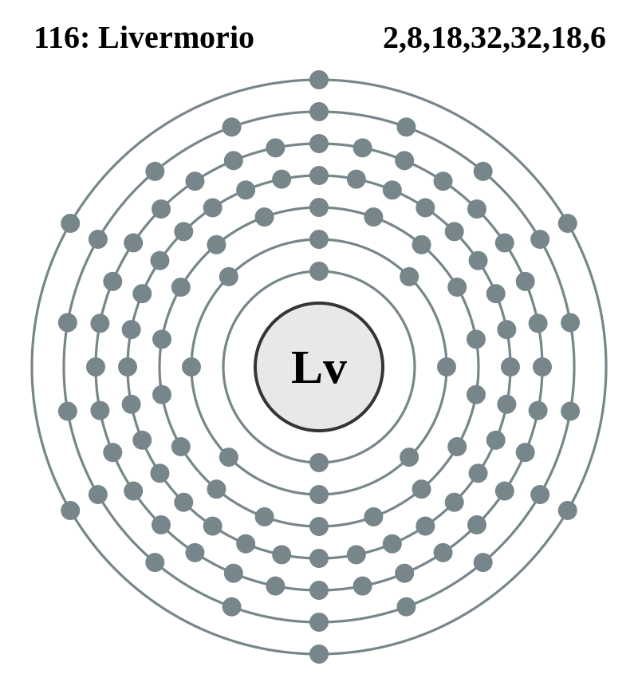

|
|
||
|
Livermorio Se considera un metal del bloque p y es el calcógeno más pesado. El livermorio también se prevé que tenga propiedades en común con el oxígeno, el azufre, el selenio y el telurio. |
 |
DATOS Número Atómico: 116 Peso Atómico: 293 Electronegatividad: - Configuración Electrónica: [Rn]5f146d107s27p4 Estados de Oxidación: N/A No. de Electrones de Valencia: N/A |